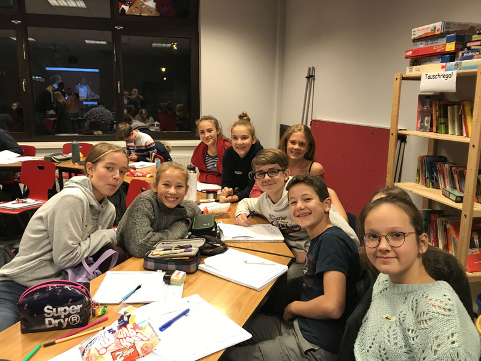

Änderung des Fahrplans der Linie 17
 Im Schülerverkehr der Linie 17 gibt es ab dem 16. Dezember 2019 Änderungen. Um mehr darüber zu lesen, klicken Sie bitte HIER.
Im Schülerverkehr der Linie 17 gibt es ab dem 16. Dezember 2019 Änderungen. Um mehr darüber zu lesen, klicken Sie bitte HIER.
Im Schülerverkehr der Linie 17 gibt es ab dem 16. Dezember 2019 Änderungen. Um mehr darüber zu lesen, klicken Sie bitte HIER.
Ein voller Erfolg für die Schülerinnen und Schüler des Leibniz-Gymnasiums
Insgesamt 75 Schülerinnen und Schüler aus dem Raum Ostholstein rechneten und knobelten in Eutin an den Aufgaben der Mathe Olympiade.
Von den 17 Schülerinnen und Schülern der Mathe-AG des Leibniz-Gymnasiums konnten
7 vordere Plätze belegen und gewannen Sach- und Geldpreise.
Liebe Schülerinnen, liebe Schüler,
liebe Eltern,
auch dieses Jahr findet wieder unser traditioneller Adventsbasar statt. Daher würden wir uns sehr über kreative Standideen zum Thema „Weihnachten rund um die Welt“ freuen. Der am Ende eingenommene Betrag wird dieses Jahr erneut an das Projekt LebensTräume Bad Schwartau und an das Ronald McDonald Haus/UKSH Lübeck gespendet. Neben Basteleien, Plätzchen und anderen Leckereien, einer großen Tombola, dem traditionellen Lehrer-Flohmarkt und der beliebten Geisterbahn haben die Besucher zusätzlich die Möglichkeit, etwas Gutes zu tun:
Mit dem eigenen Wunschbaum des Leibniz-Gymnasiums besteht die Möglichkeit, Kindern ihren liebsten Weihnachtswunsch zu erfüllen. Hierzu können sich interessierte Besucher einen Wunschstern am Weihnachtsbaum aussuchen, das Geschenk für die Kinder kaufen, schön einpacken und bis zum 16. Dezember wieder im Sekretariat abgeben, damit die Kinder und Jugendlichen diese rechtzeitig zum Heiligen Abend erhalten. Der Kostenrahmen für die einzelnen Geschenke liegt bei 20 - 25 Euro.
Es wäre schön, wenn sich auf diesem Weg alle Wünsche der Kinder erfüllen ließen. Bei weiteren Fragen wendet euch gerne an Nele Wagner(Q1c).
Der Adventsbasar findet am Freitag, den 6. Dezember, im Leibniz-Gymnasium Bad Schwartau, Lübecker Straße 75, statt. Beginn ist um 15.00 Uhr und Ende ist um 18.00 Uhr.
Eure SV
 Am Dienstag, dem 19.11.19, 12.10 Uhr bis 14.00 Uhr (6./7.Std.) in den Klassenräumen (R. 34, 35, 36) (6. Std.)sowie in Raum 46 (7.Std.)
Am Dienstag, dem 19.11.19, 12.10 Uhr bis 14.00 Uhr (6./7.Std.) in den Klassenräumen (R. 34, 35, 36) (6. Std.)sowie in Raum 46 (7.Std.)
Wie bereits in den vergangenen Jahren sind die Grundschul-Klassenlehrerinnen und -Klassenlehrer unserer jetzigen Fünft- (und Sechst-Klässler) zu einem Treffen mit den derzeitigen Klassenleitern (Herr Breede, Herr Bienengräber, Frau Hieber) ins Leibniz-Gymnasium eingeladen.
In der 6. Stunde (12.15-13.00 Uhr) haben die Kolleginnen und Kollegen aus den Grundschulen die Gelegenheit, bei einer Unterrichtsstunde der Fünftklässler zu hospitieren. Im Mittelpunkt soll aber in der 7. Stunde (13.10-13.55 Uhr in Raum 46) der Austausch über den bisherigen Werdegang ihrer Schülerinnen und Schüler an unserer Schule stehen. Vielleicht bietet sich so eine weitere Möglichkeit, durch die Erfahrungen aus der Grundschulzeit den Werdegang der Kinder an unserer Schule möglichst förderlich zu gestalten.
B. Jaecks
Gemäß einer nun bereits kleinen Tradition absolvieren unsere 8. Klassen nun wieder ihre Vorbereitung
für Jugend debattiert. Sie werden dabei eine besondere Debattenkultur kennenlernen, in der es darum geht, eine Fragestellung so genau wie möglich zu beleuchten. Dabei müssen sie ihre Sachkenntnis, Überzeugungskraft, Ausdrucksvermögen und Gesprächsfähigkeit unter Beweis stellen. Die Unterrichtseinheit mündet in einen jeweiligen Klassenwettbewerb, bei dem die Teilnehmer für den Schulwettbewerb am 20.01.2020 ermittelt werden. Am 13.02.2020 wird es dann zum Regionalwettbewerb nach Ahrensburg gehen.
Zum Auftakt der Unterrichtseinheit besuchten bereits 17 Schülerinnen und Schüler als Vertreter ihrer jeweiligen Klassen eine Jurorenschulung am Kopernikus-Gymnasium in Bargteheide. In einer arbeitsreichen Nachmittagsveranstaltung im Anschluss an den Schultag wurde gelernt und geübt, wie die Debatten zu jurieren sind. Vorbildliches Verhalten, messerscharfe kluge Fragen, präzises Formulieren und die gekonnte Umsetzung der Bewertungskriterien ließen die ebenfalls anwesenden fremden Lehrer nur staunen und waren Anlass zur Bewunderung.

Ich bin sehr stolz auf euch und freue mich auf die nächsten Wochen, die im Zeichen von Jugend debattiert stehen werden. Ein ganz herzlicher Dank geht auch an alle Eltern für das Bringen und Abholen.
Allen weiterhin viel Erfolg!
Wie in der letzten Sitzung berichtet, haben sich die SEB-Vorstände der drei weiterführenden Schulen in Bad Schwartau auf die Gründung einer Elterngemeinschaft verständigt, um Themen, die alle drei Schulen betreffen, gemeinsam und strukturiert voranbringen zu können.
Unser erstes Thema ist – wie angekündigt – unter dem Schlagwort „Digitalisierung“ zusammenzufassen. Vor dem Hintergrund der zugesagten Bundesmittel für diesen Bereich haben wir uns die derzeitige Situation an den Schulen angesehen und erörtert, was zu tun ist, um die Voraussetzungen für die Bezuschussung zu erfüllen.
Das sind
• die Erstellung eines Medienkonzepts für alle Schulen und das
• Vorhandensein von IT-Mitarbeitern für die Schulen beim Schulträger.
Liebe Eltern, liebe Schülerinnen und Schüler der 4. Klassen,
zusätzlich zu der am Donnerstag, dem 06. Februar 2020, stattfindenden Informationsveranstaltung für die zukünftigen fünften Klassen möchten wir den interessierten Eltern und Schülern der jetzigen vierten Klassen der Grundschulen auch einen Einblick in die lebendige Unterrichtspraxis am Leibniz-Gymnasium anbieten. Deshalb laden wir zu einem „Tag des offenen Klassenzimmers“ ein.
Dieser findet statt am Samstag, dem 23. November 2019, in der Zeit von 08.30 bis 13.00 Uhr.
An diesem Tag heißen die 5. und 6. Klassen Sie in ihrem Unterricht willkommen. Dazu haben wir unsere sonst 45-minütigen Unterrichtsstunden in zwei Phasen von jeweils 20 Minuten geteilt. Eine genaue Übersicht über die Verteilung der Besucher mit einem Stunden- und Raum-Plan wird den Gästen beim Empfang bekannt gegeben. Außerdem bieten Schüler/-innen aus der Oberstufe ihre Unterstützung beim Finden der Räume an.
Bei Interesse melden Sie sich bitte in der Zeit vom 04. bis zum 14. November 2019 telefonisch unter der Nummer 0451 / 2000 720 im Sekretariat des Leibniz-Gymnasiums an. Sie werden dann so auf die verschiedenen Klassen verteilt, dass pro Unterrichtsphase 5-8 Gäste anwesend sind. Mit einer „Besucherkarte“, die jeder Gast beim Empfang erhält, erfährt jeder, wo/wann er welchen Unterricht besuchen kann.
Wir werden uns bemühen, den interessierten Familien innerhalb des Zeitraumes von 8.30-13.00 Uhr den Besuch von mindestens zwei Fächern zu ermöglichen, bitten aber nach den hohen Anmeldezahlen des letzten Jahres darum, dass die Viertklässler möglichst nur von einem Elternteil in den einzelnen Unterrichtsstunden begleitet werden.
Bei Wartezeiten und für die Pausen sorgen helfende Mütter in unserem Bistro für das leibliche Wohl. Außerdem bieten Schülerinnen der SV auch eine Betreuung für jüngere Geschwisterkinder an.
Viel Freude beim Besuch an unserer Schule!
B. Jaecks (Orientierungsstufenleiterin)
Die erste Konzerthälfte dieses abwechslungsreichen Abends bestreiten die zahlreichen Ensembles der Schule, die speziell für diesen Anlass ein jazziges Programm zusammengestellt haben. So werden Evergreens wie „On the Sunny Side of the Street“, als auch modernere Stücke wie z. B. vom Esbjörn Svensson Trio zu hören sein.
Den zweiten Teil des Konzertes gestaltet das in diesem Jahr neu gegründete Sunday Morning Jazz Orchestra aus Storman, welches sich aus ehemaligen Mitgliedern des Landesjugendjazzorchesters und der Benni‘s Bigband aus Kiel zusammensetzt.
Des Weiteren kennt man viele Musiker aus der größten Coverband des Nordens – Magic25. Auf dem Programm stehen Stücke von Quincy Jones, Joe Zawinul (Birdland) und der Big Fat Band.
Ein Pflichttermin für jeden Jazzfreund!
Der 12.09. war in doppelter Hinsicht ein besonderer Schultag für die 9c. So besuchte die Klasse im Rahmen des Biologieunterrichts mit Herrn Klinke das Reallabor Wald. Dieses neue Projekt der Natur Akademie ist im Lübecker Stadtwald angesiedelt. Außerdem hatte das Fernsehen sein Interesse am Projekt angemeldet und so wurden einige Schülerinnen und Schüler den Tag über bei ihren ökologischen Untersuchungen von einem vierköpfigen Kamera-Team des Kinderkanals begleitet.
In mehreren Arbeitsgruppen versuchte die Klasse, die Wichtigkeit des „Totholzes“ für das Waldökosystem in eigens ausgesuchten Untersuchungsabschnitten zu belegen und zu erklären. Was dabei heraus kam, gibt es am kommenden Sonntag (27. Oktober 2019) ab 20.10 Uhr im Nachhaltigkeitsmagazin Erde an Zukunft bei Kika zu sehen. Viel Spaß dabei!